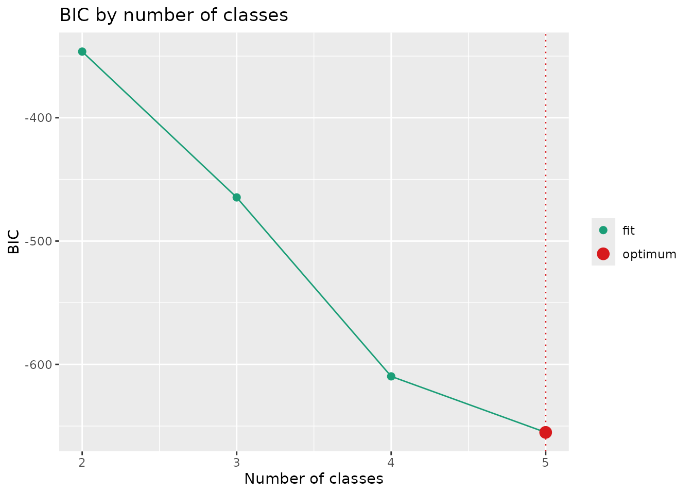
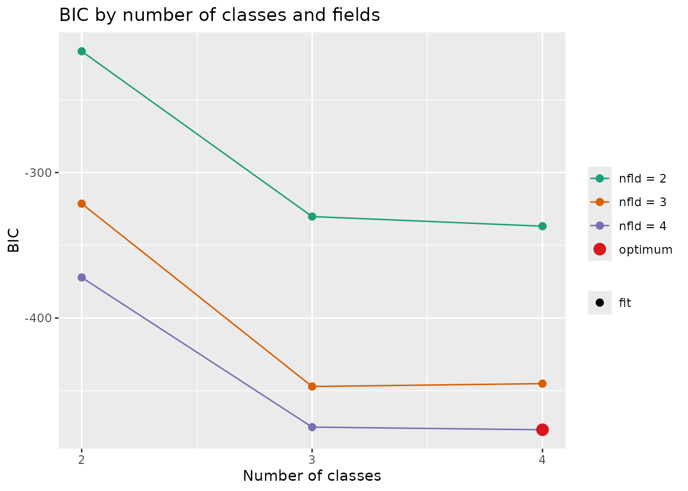
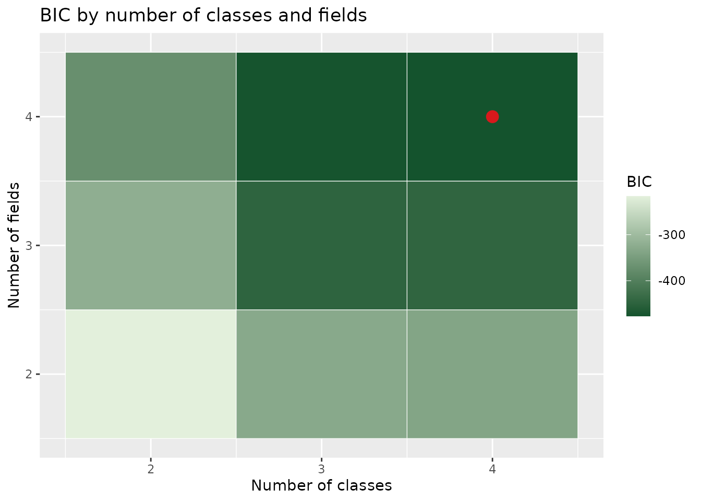

Draws the fit index recorded by exametrika::GridSearch() against the
number of classes or ranks. For LCA/LRA this is one line. For Biclustering
the default is one line per number of fields, and style = "tile"
draws the class-by-field grid as a heat map instead. Settings that
converged are filled points, settings that left a class, rank or field
empty are open triangles, settings that failed to converge are left
blank, and the optimum is marked with a large red point (and, for one
line, a dotted vertical line).
Usage
plotGridSearch_gg(
data,
style = c("line", "tile"),
title = TRUE,
colors = NULL,
linetype = "solid",
show_legend = TRUE,
legend_position = "right"
)Arguments
- data
A
GridSearchresult fromexametrika::GridSearch().- style
Character.
"line"(default) draws the index against the number of classes/ranks;"tile"(Biclustering only) draws a heat map over classes and fields.- title
Logical or character. If
TRUE(default), display an auto-generated title. IfFALSE, no title. If a character string, use it as a custom title.- colors
Character vector. For
style = "line": the line color (LCA/LRA) or one color per number of fields (Biclustering). Forstyle = "tile": two colors for the low and high ends of the index scale. IfNULL(default), the package palette is used.- linetype
Character or numeric. Line type of the index line(s). Default is
"solid". Ignored forstyle = "tile".- show_legend
Logical. If
TRUE(default), display the legend.- legend_position
Character. Position of the legend. One of
"right"(default),"top","bottom","left","none".
Details
The plot reads index_vec (LCA/LRA) or index_matrix
(Biclustering) together with the empty_vec/empty_matrix
flags that GridSearch() records since exametrika 2.3.0. With an
older exametrika no setting is marked as empty.
Examples
# \donttest{
library(exametrika)
gs <- GridSearch(J15S500, max_ncls = 5, fun = "LCA", index = "BIC")
#>
#> Optimal ncls/nrank is 5
#> Running analysis with optimal parameters...
plotGridSearch_gg(gs)

gs_b <- GridSearch(J15S500, max_ncls = 4, max_nfld = 4,
fun = "Biclustering", index = "BIC")
#>
#> Optimal ncls/nrank is 4 and Optimal nfld is 4
#> Running analysis with optimal parameters...
plotGridSearch_gg(gs_b)

plotGridSearch_gg(gs_b, style = "tile")

# }